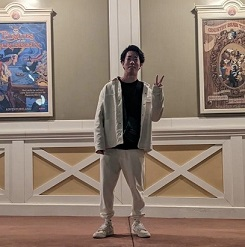
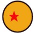
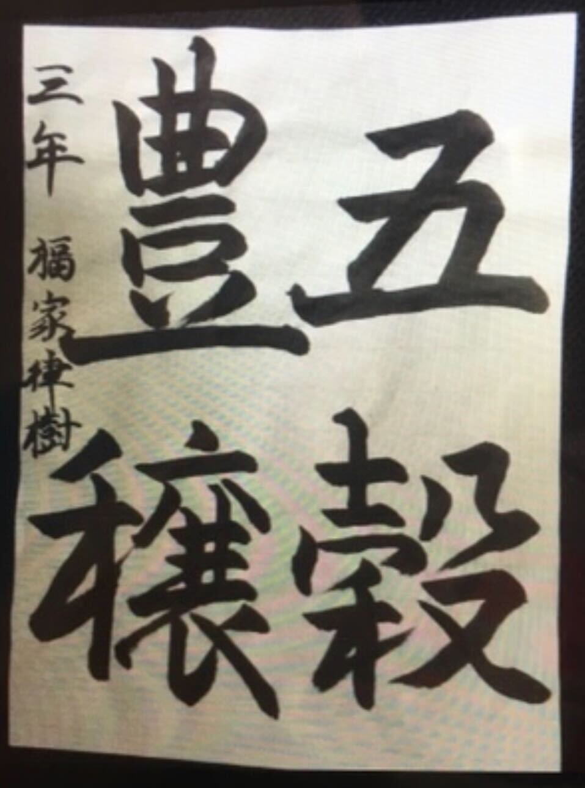
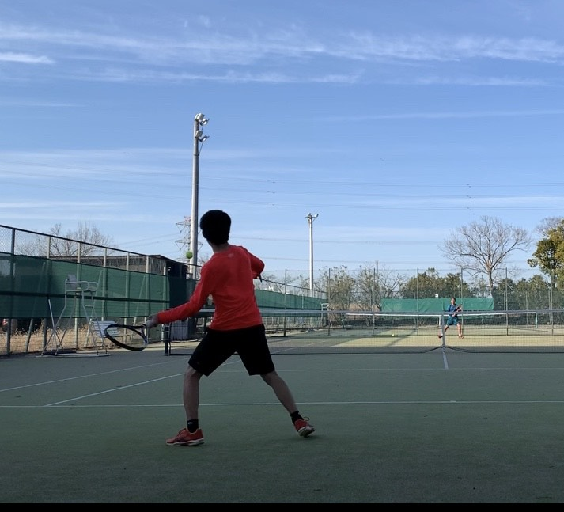
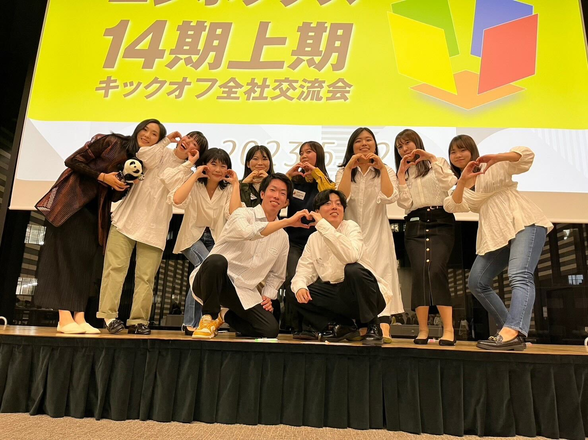

ABOUT
福家律樹について
EXPERIENCE
これまでの経験

ABOUT ME
福家律樹
座右の銘
失敗したらガッツポーズ
by松岡修造氏
ドラゴンボールの保有数
3個
EXPERIENCE


書道教室
幼稚園時から中学時まで書道教室に通う
右手で書くことに大苦戦する
小・中学校で金賞を量産する
書道6段
集中が続かない
友達と一緒じゃないと行きたくない
集中力が付き、忍耐強くなった
1人でも通い、目標に向けて試行錯誤できるようになった

テニス
小学生からテニスを始める
中学から大学までテニス部に所属
高校時代に通ったテニスクラブで
松岡修造氏から指導を受ける
テニスコーチのアルバイトを経験
(約2年間)
試合に負ける、コーチに怒られると泣く
練習中は友達とおしゃべり
きつい練習でも弱音を吐かない、根性がついた
頭を使って考えながら練習できるようになった
幅広い年代の人と交流する経験を踏めた

ニジボックス入社
先輩インタビュー
F-BT研修
ディレクター研修
コーディング研修
先輩インタビュー
どんな働き方？？
仕事で意識していることは何だろう？？
他職種と関わることが多いため、相手基準での接し方
担当領域を超えた染み出し
失敗を失敗と思わない
F-BT研修
信頼されるビジネスパーソンって??
仕事で何を意識して、どんなスタンスで働く??
目的理解の重要性
締め切りから逆算した時間管理
報連相
ディレクター研修
ディレクターって何するの?
ヒューリスティック分析?UIUX分析?トレース?
制作進行～運用フェーズまで関わるポジション
サイトの目的やターゲットから良い点、改善点を見つける
認識がズレる可能性がある言葉を避ける
コーディング研修
ドメイン? キャッシュ? CSS? GAS?
知らない言葉ばかり、、、
コーディングを全くしたことない、、
研修中に出てきた言葉を理解できるようになった
先輩FEさんに教えていただき、コーディングしたものが
ブラウザで表示できた
エンジニアさんの仕事の解像度が上がった
成果物 ▶
天気BOT
お問い合わせ
slack
Copyright © 2023 Ritsuki Fuke Inc. All Rights Reserved.